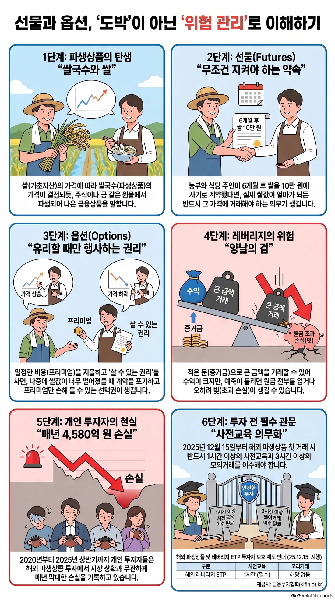

금융상품과 생활 거래 기초
돈을 쓰는 목적, 거래 대상의 상태와 위험을 먼저 정하면 선택이 쉬워집니다.
상품을 고를 때 보는 세 가지
수익률은 돈이 얼마나 늘어날 가능성이 있는지, 위험은 예상과 다르게 줄어들 수 있는 정도를 뜻합니다.
유동성은 필요할 때 현금으로 바꾸기 쉬운 정도입니다. 수익률이 높아 보여도 급하게 돈이 필요할 때 팔기 어렵다면 내 상황에는 맞지 않을 수 있습니다.
“높은 수익률, 낮은 위험, 높은 유동성”을 동시에 모두 얻기는 어렵다는 점을 기억하세요.
기본 금융상품 지도
예금·적금은 안정성과 목적자금 관리에, 주식은 기업 성장에 참여하는 데 쓰입니다.
채권은 정부나 기업에 돈을 빌려주고 이자와 원금을 받는 구조입니다. ETF·펀드는 여러 자산을 한 상품에 담아 분산투자를 쉽게 합니다.
상품 이름보다 “무엇에 투자하는지, 비용은 얼마인지, 어떤 위험이 있는지”를 먼저 확인하세요.
주식·채권·예금 비중을 나라별로 비교합니다.
파생상품은 “가격에서 나온 계약”입니다
파생(派生)은 “어떤 것에서 갈라져 나와 생긴다”는 뜻입니다. 파생상품은 주식·주가지수·금리·환율·원자재처럼 기준이 되는 대상의 가격 변화에 따라 가치가 달라지는 계약입니다. 기준이 되는 대상을 기초자산이라고 합니다.

예를 들어 KOSPI 200 선물은 KOSPI 200 지수 자체를 사는 것이 아니라, 그 지수의 미래 가격 변화와 연결된 계약을 거래하는 것입니다. 옵션은 미래에 정한 가격으로 사고팔 수 있는 권리를 거래합니다.
파생상품은 가격 변동 위험을 줄이는 헤지에 쓸 수 있지만, 가격 방향을 예상하는 거래에도 쓰일 수 있습니다. 계약 단위·만기·증거금 때문에 현물 주식보다 손익이 더 빠르게 커질 수 있으므로, 먼저 계약 구조와 최대 손실을 이해해야 합니다.
영어 derivative(데리버티브)는 미적분에서 도함수라는 뜻으로도 쓰이지만, 금융에서는 이처럼 기초자산에서 가치가 파생되는 계약을 뜻합니다.
파생상품 개념 동영상으로 보기 NotebookLM으로 만든 요약 영상입니다 · 구글 계정 로그인이 필요할 수 있습니다.
배추 판매로 보는 선물 계약
배추 농부가 가을에 배추 1,000포기를 수확해 팔 예정인데, 가을 가격이 포기당 1,000원이 될지 6,000원이 될지 알 수 없다고 해 보세요. 농부와 김치공장이 지금 “가을에 포기당 3,000원으로 1,000포기를 사고팔자”고 약속할 수 있습니다.
여기서 실제 배추는 기초자산이고, 미래에 정한 가격으로 사고팔겠다는 약속은 배추 가격에서 파생된 계약입니다. 농부는 가격 폭락 위험을 줄이고, 김치공장은 가격 급등 위험을 줄일 수 있습니다.
가을 시장가격이 1,000원이면 농부에게, 6,000원이면 김치공장에게 이 약속이 유리합니다. 따라서 파생상품은 위험을 줄이는 데 쓸 수 있지만, 가격이 한쪽으로 크게 움직이면 상대방의 손실도 커질 수 있습니다.
TRADE VS FUTURES
현물과 선물: 지금 거래와 미래 계약
현물은 한자로 現物이며, 선물·옵션 같은 미래 계약이 아니라 지금 소유권을 사고파는 자산 또는 거래를 뜻합니다. 예를 들어 주식을 사면 결제 절차를 거쳐 그 회사의 지분이 전자적으로 내 계좌에 들어옵니다. 종이 주권이나 물건을 손에 받아야만 현물인 것은 아닙니다.
영어권 금융시장에서는 현물가격·현물시장을 보통 spot price·spot market이라고 부릅니다. 주식·채권처럼 파생상품이 아닌 자산을 선물과 대비할 때는 cash market이라는 표현도 씁니다. 그래서 주식 매수는 기업 지분 자체를 보유하는 현물 거래이고, 주식선물 매수는 그 주가 변화에 연결된 계약을 보유하는 파생상품 거래입니다.
다만 원유·금·곡물처럼 실제 물건의 인도까지 강조할 때는 physical commodity(피지컬 커모디티) 또는 physical delivery(피지컬 딜리버리)라고 합니다. spot은 “지금 거래·결제하는 시장”이라는 뜻에 가깝고, physical은 “실물의 보관·운송·인도”를 강조하는 말이라는 차이가 있습니다.
선물은 미래 가격을 지금 약속하는 계약입니다. 실제 자산을 지금 받는 대신 가격 차이를 정산하는 구조가 많습니다. 현물은 보통 사려는 금액 전체가 필요하지만, 선물은 일부 증거금으로 거래하므로 적은 돈으로 큰 금액에 노출될 수 있고 손익도 빠르게 커질 수 있습니다.
선물은 미래 거래를 미리 정하는 약속
선물은 미래의 특정 날짜에 어떤 물건이나 자산을 미리 정한 가격으로 사고팔기로 하는 계약입니다. 이름에 “선(先)”이 들어가는 이유는 미래의 거래 조건을 지금 먼저 정하기 때문입니다.
현물 주식처럼 기업 지분이라는 물건 자체를 사는 것이 아니라, 지수·원유·환율 같은 기준 대상의 가격 변화에 따른 손익을 주고받는 표준 계약을 거래합니다.
예를 들어 A가 KOSPI 200 선물 1계약을 매도하고 B가 같은 계약 1계약을 매수해 주문이 체결되면 선물 계약 1개가 생깁니다. A는 지수가 내리면, B는 지수가 오르면 유리합니다. 거래소·청산기관이 양쪽 증거금을 관리하고 매일 손익을 정산합니다.
배추 농부와 김치공장이 “가을에 배추 1,000포기를 포기당 3,000원에 사고팔자”고 약속하는 모습을 생각해 보세요. 나중의 시장가격이 달라져도, 약속한 가격을 기준으로 거래하거나 차이를 정산합니다.
선물은 가격 변동 위험을 줄이는 헤지에 쓸 수 있지만, 가격 방향만 보고 거래하면 손실이 빠르게 커질 수 있습니다. 거래 단위·만기·증거금과 최악의 손실을 먼저 확인해야 합니다.
주문이 만나야 선물·옵션 계약이 생깁니다
선물이나 옵션은 한쪽의 주문만으로는 생기지 않습니다. 같은 계약을 사려는 주문과 팔려는 주문이 가격·수량 조건에서 만나야 체결됩니다. 예를 들어 어떤 사람은 지수가 오를 것이라 보고 선물 매수 주문을, 다른 사람은 내릴 것이라 보고 같은 선물 매도 주문을 낼 수 있습니다. 두 주문의 가격이 맞으면 계약이 하나 생기고, 오르면 매수 쪽이, 내리면 매도 쪽이 유리해집니다.
다만 항상 “한 사람은 상승, 다른 사람은 하락”이라고만 생각하면 좁습니다. 주식 보유자는 하락 위험을 줄이려고 선물을 매도할 수 있고, 기업은 원재료 가격 상승을 걱정해 선물을 매수할 수 있습니다. 즉 반대 주문은 서로 다른 전망 때문에 나오기도 하고, 이미 가진 위험을 줄이려는 헤지나 가격 차이를 이용하려는 거래 때문에 나오기도 합니다.
거래소에서는 서로의 이름을 보고 1:1로 상대를 골라 계약하지 않습니다. 투자자가 증권사 앱에 계약 종류·만기·가격·수량을 넣어 주문하면, 거래소의 주문장에 익명으로 쌓입니다. 시스템은 살 가격이 팔 가격과 만나는지 확인해 자동으로 체결합니다. 보통 더 높은 매수호가와 더 낮은 매도호가가 먼저, 같은 가격이면 먼저 들어온 주문이 먼저 처리됩니다.
예를 들어 ‘340.00에 1계약 매수’와 ‘340.00에 1계약 매도’가 주문장에 있으면 시스템이 이를 연결합니다. 매수 주문이 3계약이고 반대 주문이 여러 개라면 여러 주문과 나누어 체결될 수도 있습니다. 반대로 매수 339.95와 매도 340.00처럼 가격이 만나지 않으면 주문장에 남아 기다립니다. 체결 뒤에는 거래소·청산기관이 정해진 방식으로 결제와 증거금 관리를 맡으므로, 개인이 특정 반대편의 신원을 알아야 거래할 수 있는 구조가 아닙니다.
내가 낸 주문이 호가창에서 어떻게 체결·대기되는지 직접 확인하세요.
옥수수 선물: 항구·창고까지 이어지는 실물인도 예시
미국 옥수수 선물처럼 실물인도 방식인 상품은 만기까지 매수 포지션을 남기면 옥수수 조금이 집으로 배송되는 구조가 아닙니다. 대표 계약은 1계약이 5,000부셸(약 127톤)처럼 큰 표준 단위입니다. 이는 소매점에서 몇 봉지 사는 단위가 아니라 생산·유통·가공 업체가 가격 위험을 관리할 수 있도록 만든 도매 단위입니다.
증거금 100달러를 냈다고 해서 100달러어치만 받을 수 있는 것도 아닙니다. 증거금은 계약 전체 금액의 일부를 맡기는 보증금이며, 실제 물량 가격도 최대 손실 한도도 아닙니다. 선물은 작은 증거금으로 큰 계약 금액에 노출되므로, 가격이 불리하게 움직이면 추가 증거금 요구나 청산 손실이 생길 수 있습니다.
손실로 계좌가 유지증거금 아래로 내려가면 증권사는 추가 증거금을 요구할 수 있습니다. 정해진 기한에 입금하지 못하면 포지션이 강제청산될 수 있으며, 그때도 손실이 예치 증거금을 넘었다면 부족금은 남습니다. 즉 “증거금만 잃으면 끝”이 아니라 `손실 발생 → 추가 입금 요구 → 미입금 시 강제청산 → 남은 부족금 정산`의 흐름을 이해해야 합니다. 실제 기한·청산 기준·부족금 처리 방식은 증권사와 상품 약관에 따라 다릅니다.
예를 들어 식품회사가 옥수수 가격 상승을 걱정해 선물을 매수한 뒤, 인도 절차까지 포지션을 유지했다고 해 보세요. 인도가 배정되면 매수자는 계약 전체 대금을 내고 거래소가 정한 적격 곡물창고의 전자 창고증권 또는 선적증서를 받습니다. 이 증서는 그 창고에 보관된 규격·등급·수량의 옥수수를 인수할 권리를 나타냅니다.
그다음 실제 물류가 필요하면 증서를 취소하고 창고에 반출을 요청합니다. 옥수수가 내륙의 곡물 엘리베이터에 있다면 트럭·철도·바지선으로 수출 터미널이나 항구까지 옮긴 뒤 선박 운송을 별도로 계약할 수 있습니다. 보관료, 상·하차료, 내륙운송비, 항만·선박 비용, 보험, 통관·검역 등은 선물가격과 별개로 발생합니다. 인도 장소가 꼭 항구인 것은 아니며, 계약서에 정해진 지정 창고인지를 먼저 확인해야 합니다.
미국 창고의 증서를 받는 것과 그 옥수수를 한국에 들여와 판매하는 것은 별개입니다. 영리 목적 수입은 법인만 가능한 것은 아니지만 사업자등록과 사업자 통관 절차가 필요하고, 식용으로 수입·판매한다면 수입식품 관련 영업등록·수입신고와 해외 제조업소 또는 농산물 포장장소 등록을 확인해야 합니다. 식용·사료용·종자용에 따라 검역과 추가 요건이 달라질 수 있습니다.
따라서 실제 현물 사업에서는 식품회사·사료회사 등이 선물로 가격 위험을 관리하고, 수입식품 등록을 갖춘 무역·유통사 또는 관세사·물류회사와 수입·검역·통관을 나누어 진행하는 경우가 많습니다. 개인·단기 거래자는 보통 최초통지일이나 증권사가 정한 인도 위험 시점 전에 반대매매로 청산하거나 다음 만기로 옮깁니다. 실물인도와 현금결제는 다르므로, 주문 전 계약 단위·결제 방식·인도 장소·최초통지일·증권사 청산 규정을 반드시 확인하세요.
“만기 직전까지 포지션을 정리하지 못해 트럭에 실린 곡물이 집 앞까지 배송됐다”는 식의 이야기는 트레이딩 업계에 널리 떠도는 출처 불명의 무용담에 가깝고, 실제 인물·날짜·언론 보도로 확인되는 사례는 찾기 어렵습니다. 다만 만기까지 방치된 실물인도형 선물이 큰 손실로 이어진 사건은 실제로 있었습니다. 2020년 4월 20일 뉴욕상업거래소(NYMEX)의 5월물 WTI 원유선물은 실물 인수 부담과 저장공간 부족이 겹치며 배럴당 -37.63달러로 마감했습니다. 만기 전 포지션을 정리하지 못한 일부 투자자는 증거금을 넘는 손실을 봤고, 미국 증권사 인터랙티브 브로커스는 이 사태로 약 1억 930만 달러의 손실을 떠안았다고 밝혔으며, 이후 미국 상품선물거래위원회(CFTC)는 주문 시스템의 관리 부실을 이유로 이 회사에 175만 달러의 제재금을 부과했습니다. 곡물이 아닌 원유 사례이고 “물건이 배송됐다”가 아니라 “가격이 마이너스로 정산됐다”는 점은 다르지만, 실물인도형 선물을 만기까지 방치하면 안 되는 이유를 보여 주는 실제 사건이라는 점은 같습니다.
옵션은 선택권입니다: 콜과 풋
옵션은 미래에 정한 가격으로 사고팔 수 있는 권리입니다. 콜옵션은 살 권리이고, 풋옵션은 팔 권리입니다.
주가가 오를 때를 대비해 살 권리를 사는 것이 콜옵션 매수이고, 주가 하락에 대비해 팔 권리를 사는 것이 풋옵션 매수입니다. 옵션 매수자는 현물 주식이 없어도 옵션 계약 자체를 사고팔 수 있습니다.
옵션도 선물처럼 반대편이 있어야 체결됩니다. 예를 들어 A가 “2개월물·행사가 10만 원 콜옵션” 1계약을 매수하고 B가 같은 계약을 매도하면, A는 살 권리를 받고 B는 팔아줄 의무를 집니다. A는 프리미엄을 내고, B는 프리미엄을 받습니다.
실제 거래소에서는 B에게 직접 말하는 것이 아니라 증권사 주문 화면에서 거래소가 미리 정한 기초자산·만기·행사가·콜/풋·수량을 고른 뒤 매수 또는 매도 주문을 냅니다. 같은 조건의 익명 반대 주문과 가격이 맞으면 거래소·청산기관을 통해 체결됩니다. 거래소에 상장되지 않은 주식·만기·행사가를 임의로 만들어 주문할 수는 없습니다.
권리를 사는 사람은 보통 프리미엄을 내고 불리하면 권리를 포기할 수 있습니다. 권리를 팔아주는 사람은 프리미엄을 받지만, 현물 없이 콜옵션을 매도하면 필요할 때 비싼 가격에 주식을 사서 넘겨야 할 수도 있어 큰 손실 위험이 있습니다. 기관·기업은 금융회사와 조건을 직접 정하는 장외 맞춤계약을 맺기도 하지만, 개인의 일반 거래소 주문과는 다릅니다.
프리미엄과 증거금, 미리 구분하기
premium은 영어로 기본 가격에 더해 내는 돈, 또는 특별한 권리·보상에 붙는 대가라는 뜻입니다. 더 거슬러 올라가면 라틴어 praemium(상·보상)에서 온 말입니다. 보험료를 insurance premium이라 부르는 것도 같은 맥락입니다.
옵션 프리미엄은 옵션을 사는 사람이 “정한 가격으로 사고팔 수 있는 선택권”을 얻기 위해 내는 가격입니다. 예를 들어 1,000만 원어치 주식/ETF 하락을 대비하는 풋옵션의 프리미엄이 3%라면, 처음 내는 비용은 30만 원입니다. 시장이 안 떨어지면 이 돈은 비용이 되지만 크게 떨어지면 옵션의 이익이 손실 일부를 메울 수 있습니다. 상가 등의 권리금과는 다른 금융 용어입니다.
증거금은 선물 거래나 옵션 매도자가 계약을 지키기 위해 맡기는 보증금입니다. 손실로 유지 기준에 못 미치면 추가 증거금 요구나 강제청산이 생길 수 있습니다. 즉 프리미엄은 권리를 사는 가격이고, 증거금은 계약 이행을 위한 보증금이라는 점을 구분하세요.
만기와 청산: 계약을 끝내는 방법
선물·옵션은 영원히 이어지는 계약이 아니라, 거래소가 상품별로 미리 정한 마지막 거래일과 만기일이 있습니다. “몇 월물”이라는 말은 그 계약이 끝나는 달을 가리킵니다. 정확한 날짜와 결제 방식은 상품마다 다르므로 거래소의 상품명세에서 확인해야 합니다.
청산은 만기 전에 반대 거래를 해서 내 포지션을 0으로 만드는 것입니다. 선물을 샀다면 같은 계약을 팔아 청산하고, 선물을 팔았다면 같은 계약을 사서 청산합니다. 옵션도 사 둔 계약을 팔거나, 팔아둔 계약을 다시 사면 청산할 수 있습니다.
만기까지 계약을 남겨 두면 상품 조건에 따라 현금으로 가격 차이를 정산하거나, 옵션 권리가 행사되거나, 가치 없이 끝날 수 있습니다. 따라서 “언제 끝나는 계약인지, 만기 전에 청산할지 다음 만기로 옮길지”를 주문 전에 정리하는 습관이 중요합니다.
옵션 만기일과 실제 파생상품 보기
옵션 만기일에는 계약이 끝나므로, 옵션을 가진 사람과 옵션을 팔아준 금융기관이 포지션을 정리하거나 위험을 줄이기 위한 헤지를 조정할 수 있습니다. 이 과정에서 관련 주식이나 선물의 주문이 늘어나면 지수에 단기 영향이 생길 수 있지만, 만기만으로 가격 방향을 단정할 수는 없습니다.
한국거래소(KRX)에는 KOSPI 200·미니 KOSPI 200·KOSDAQ 150 선물과 옵션, 미국달러선물, 국채선물, 금선물 등이 있습니다. 상품마다 거래승수·만기·결제 방식·증거금이 다르므로, 실제 주문 전에는 거래소 상품명세와 증권사 주문 화면을 함께 확인해야 합니다.
선물 만기일은 왜 3개월 단위(분기월)로 정해질까요?
선물 거래의 모태는 19세기 미국 시카고 상품거래소(CBOT)의 옥수수·밀 같은 농산물 거래였습니다. 파종부터 수확·저장·유통까지 이어지는 흐름이 대략 한 계절, 즉 3개월 단위로 바뀌었기 때문에 농부와 상인이 계절별 수급과 가격 변동 위험을 헤지하기에 3개월 주기가 잘 맞았습니다. 이 관행이 이후 금융선물에도 이어졌습니다.
주가지수·채권 같은 금융선물에서도 3개월 주기는 시장 참가자의 생태계와 맞습니다. 기업은 분기마다 실적을 발표하고, 연기금·펀드 같은 기관 투자자도 보통 분기 단위로 포트폴리오를 재조정하므로 3개월 만기가 위험 관리와 이월(롤오버) 계획을 세우기에 편리합니다.
만기가 매달 있으면 거래량이 여러 만기로 흩어져 특정 만기의 유동성이 얕아질 수 있습니다. 만기를 3·6·9·12월처럼 분기월로 제한하면 거래가 가장 가까운 만기(근월물)에 집중되어 매수·매도 호가가 촘촘해지고 체결이 원활해지는 효과가 있습니다.
다만 모든 선물이 분기월 만기만 쓰는 것은 아닙니다. KOSPI 200 선물 같은 지수선물은 대개 3·6·9·12월을 분기월로 두지만, 원유·금 같은 원자재나 일부 통화 선물은 실물 인도와 수급 특성에 맞춰 매월 만기를 두기도 합니다. 정확한 만기 월과 최종거래일은 상품마다 다르므로 거래소 상품명세에서 확인해야 합니다.
만기일에는 선물가격과 현물가격이 왜 가까워질까요?
선물가격과 현물가격은 만기 전에는 조금 다를 수 있습니다. 거래비용, 금리, 배당, 사고팔려는 주문의 차이 때문에 같은 지수를 보고 있어도 가격 차이가 생길 수 있습니다.
하지만 만기가 되면 남아 있는 선물계약은 거래소가 정한 기초자산의 최종결제가격을 기준으로 손익을 정산합니다. 예를 들어 KOSPI 200 선물은 KOSPI 200 지수의 최종결제가격으로 현금 정산하므로, 만기에 가까워질수록 선물가격이 현물 지수와 크게 따로 움직이기 어렵습니다.
선물가격이 현물보다 지나치게 비싸거나 싸면 전문 투자자가 두 시장을 함께 사고파는 차익거래를 검토해 가격 차이를 줄이려 합니다. 다만 장중 가격이 매 순간 완전히 같다는 뜻은 아니며, 작은 차이는 계속 생길 수 있습니다.
선물·옵션은 현물시장에 어떻게 연결될까요?
현물 주식시장과 선물·옵션 시장은 서로 다른 상품을 거래하지만, 같은 기업·지수의 가격 변화를 보고 있습니다. 그래서 금리 발표나 기업 실적처럼 새로운 정보가 나오면 현물과 선물 모두에서 거의 동시에 주문이 나올 수 있습니다. 선물이 먼저 움직였다고 해서 항상 선물이 현물을 일방적으로 움직였다는 뜻은 아닙니다.
선물이 먼저 움직이고 현물 주식이 뒤따라가는 듯 보일 때도 있습니다. 지수 선물은 지수 전체 방향에 대한 판단을 빠르게 표현할 수 있어, 큰 매수·매도 주문이 먼저 나올 수 있습니다. 이후 선물 가격 차이를 줄이려는 차익거래나 헤지 주문이 지수 구성 주식·ETF의 매수·매도로 이어지면 현물 가격도 같은 방향으로 움직일 수 있습니다.
선물 가격과 현물 가격 차이가 지나치게 커지면 차익거래가 연결 고리가 될 수 있습니다. 예를 들어 KOSPI 200 선물이 지수에 비해 지나치게 비싸다면, 전문 투자자는 비싼 선물을 팔고 지수 구성 주식 또는 관련 ETF를 사는 거래를 검토할 수 있습니다. 이런 주문은 선물과 현물의 가격 차이를 다시 좁히는 방향으로 작용할 수 있습니다.
옵션도 현물시장 주문과 연결될 수 있습니다. 옵션을 팔아준 금융기관은 주가가 오르거나 내릴 때 손실 위험을 줄이기 위해 관련 주식이나 선물을 사고팔며 헤지를 조정할 수 있습니다. 특히 옵션 만기일이나 행사가격 근처에서는 이런 조정 주문이 평소보다 늘어 단기 변동성을 키울 수 있습니다.
다만 “선물·옵션 만기일이니 주가가 반드시 오른다 또는 내린다”처럼 단정하면 안 됩니다. 현물시장에는 기업 실적, 경제지표, 환율, 외국인 수급, 뉴스 등 많은 요인이 함께 작용합니다. 파생상품 흐름은 시장을 읽는 여러 정보 중 하나로만 보고, 거래량·시장 상황과 함께 확인하는 것이 좋습니다.
버틀러로 기업 분석을 시작해 볼까요?
버틀러는 투자자가 기업의 재무제표·실적·공시를 이해하기 쉽게 살펴볼 수 있도록 돕는 기업 분석 플랫폼입니다. 여러 증권 계좌와 관심 기업의 정보를 모아, 개인 투자자가 기업의 펀더멘털과 자신의 포트폴리오를 점검하는 ‘투자 비서’처럼 활용할 수 있습니다.
복잡한 숫자는 매출, 영업이익, 수주잔고, 지역별 실적 등의 그래프로 확인할 수 있습니다. 기업공시에서는 많은 공시 가운데 투자 판단에 중요한 내용을 빠르게 찾도록 돕고, 관심기업은 그룹별로 묶어 꾸준히 추적할 수 있습니다.
포트폴리오 관리 기능으로 여러 증권 계좌에 흩어진 종목을 한 화면에서 살펴볼 수 있으며, 기업 스크리너에서는 다양한 조건을 조합해 자신의 기준에 맞는 기업 후보를 찾을 수 있습니다. 초보자는 성장 추세를 읽는 데, 중·장기 투자자는 공시와 펀더멘털을 비교하는 데 활용할 수 있습니다.
다만 플랫폼이 제공하는 데이터와 시각화는 투자 판단을 돕는 정보입니다. 매매를 대신 결정하거나 수익을 보장하지 않으므로, 최신 공시 원문·재무제표·상품 이용 조건을 다시 확인하고 자신의 투자 목적과 위험 감수 수준에 맞춰 판단하세요. 일부 기능은 유료 구독으로 제공될 수 있으며, 지원 시장과 기능은 서비스 정책에 따라 달라질 수 있습니다.
AI Hub 데이터로 RAG 시작하기
AI Hub의 금융·법률 분야 데이터셋은 먼저 상세 페이지의 이용 조건, 출처 표기, 버전, 개인정보 처리 조건을 확인합니다. 허용된 원문만 내려받아 사용하며 로그인 우회·자동 수집·재배포를 전제로 하지 않습니다.
금융 FAQ는 질문·답변·기준일 단위로, 법률 자료는 법령명·조문·항·호·시행일이 끊기지 않도록 정리합니다. 각 청크에 source, dataset, version, license, topic, effective_date 같은 메타데이터를 남기면 근거와 최신성을 추적하기 쉽습니다.
등록 후에는 답변에 출처와 기준일을 보이고, 개정될 수 있는 금융법률은 최신 공식 원문으로 다시 확인합니다. 이후 수업에서는 이 근거를 상품 비교와 투자 유의사항 확인에 연결합니다.
오늘의 용어집
- 분산투자 Diversification · 分散投資
- 서로 다른 자산에 나누어 투자해 한 곳의 손실이 전체에 미치는 영향을 줄이려는 방법입니다. 종목 수를 많이 늘리는 것만으로 충분하지는 않습니다. 산업·국가·자산 종류가 서로 비슷하면 함께 움직일 수 있으므로, 자산 간 움직임도 함께 살펴야 합니다.
- 수익률 Rate of Return · 收益率 · R
- 투자한 금액 대비 얼마가 늘거나 줄었는지를 비율로 나타낸 값입니다. 높은 과거 수익률이 미래 수익을 보장하지는 않습니다. 수익률은 변동성, 최대낙폭, 비용과 함께 해석하는 것이 좋습니다.
- 위험 Investment Risk · 危險 · Risk
- 예상과 다른 결과가 나와 손실을 볼 수 있는 가능성과 그 크기입니다. 투자에서 위험은 단순히 나쁜 일이 아니라 결과가 흔들릴 수 있다는 뜻입니다. 가격 변동, 신용, 유동성 등 여러 종류의 위험을 나누어 살펴야 합니다.
- 유동성 Liquidity · 流動性
- 필요한 때 큰 가격 손해 없이 현금으로 바꾸기 쉬운 정도입니다. 거래량이 적거나 매수·매도 호가 차이가 큰 상품은 원하는 가격에 거래하기 어려울 수 있습니다. 가까운 시일에 쓸 돈일수록 유동성이 중요합니다.
- 채권 Bond · 債券
- 정부나 기업에 돈을 빌려주고 이자와 원금을 받기로 한 증서입니다. 금리 변화, 발행자의 상환 능력, 만기에 따라 가격과 위험이 달라집니다. 중간에 팔면 손익이 생길 수 있으므로 원금이 항상 보장되는 것은 아닙니다.
- 파생상품 Derivatives(데리버티브) · 派生商品
- 주가·금리·환율 등 기초자산의 가격에서 가치가 파생되는 계약입니다. 선물과 옵션 등이 대표적입니다. 가격 위험을 줄이는 헤지에 쓸 수 있지만 구조가 복잡하고 손실이 커질 수 있어 계약 조건과 최대 손실을 먼저 이해해야 합니다.
- 주식 Stock / Equity · 株式 · Stock
- 기업의 지분 일부를 나타내는 증서로, 보유자는 기업 성과에 따른 가격 변동과 배당에 참여할 수 있습니다. 기업이 잘될 가능성뿐 아니라 산업 변화, 경쟁, 가격 수준에 따라 손실도 생길 수 있습니다. 한 기업에 집중하면 개별 기업 위험이 커집니다.
- 배당 Dividend · 配當 · Div.
- 기업이 이익 일부를 주주에게 나누어 주는 금액입니다. 배당 지급 여부와 규모는 기업이 결정하며 보장되지 않습니다. 배당만 보지 말고 기업의 이익, 재무상태, 배당정책을 함께 살펴야 합니다.
- 유지증거금 Maintenance Margin · 維持證據金
- 선물·옵션 포지션을 계속 보유하려면 계좌에 유지해야 하는 최소 금액입니다. 손실 때문에 이 금액 아래로 내려가면 추가 돈을 넣으라는 요구를 받을 수 있습니다. 제때 채우지 못하면 포지션이 정리될 수 있습니다.
- 강제청산 Forced Liquidation · 強制淸算
- 증거금이 부족할 때 증권사가 포지션을 강제로 정리하는 일입니다. 추가 증거금을 정해진 기한 안에 넣지 못하면 발생할 수 있습니다. 원하지 않는 시점과 가격에 거래가 끝나 손실이 확정될 수 있습니다.
- 증거금과 일일 손익 정산
- 선물 계약이 살아있는 동안 거래소가 매일 그날의 가격 변화만큼 손익을 계좌에 반영하는 것을 일일 정산이라고 합니다. 이를 위해 계약을 시작할 때 전체 금액이 아니라 일부만 보증금처럼 맡겨두는데, 이 돈이 증거금입니다. 적은 증거금으로 큰 금액을 거래하다 보니 손실이 쌓여도 못 갚는 상황이 생길 수 있어서, 거래소는 매일 손익을 확인하고 부족하면 증거금을 더 채우게 합니다. 그래야 한쪽이 계약을 지키지 못하는 위험을 미리 줄일 수 있습니다.
- 만기 또는 청산
- 선물 계약은 영원히 이어지지 않고 거래소가 정한 마지막 날인 만기가 있습니다. 계약을 끝내는 시점은 두 갈래입니다 — 투자자가 만기 전에 스스로 반대 거래로 미리 끝내는 청산과, 아무 조치를 하지 않아 만기까지 계약이 남는 경우입니다. 대부분의 개인 투자자는 실제 물건을 주고받을 필요가 없으므로 만기 전에 청산하는 쪽을 택합니다.
- 반대거래·현금결제·인도
- 선물 계약을 끝내는 세 가지 방법입니다. 반대거래는 산 사람은 팔고 판 사람은 사서 포지션을 0으로 만드는 가장 흔한 방법입니다. 현금결제는 만기에 실제 물건 없이 처음 약속한 가격과 최종 가격의 차이만 돈으로 주고받는 방법입니다. 인도는 계약대로 실제 물건(원유·곡물 등)이나 창고증권을 주고받는 방법으로, 개인 투자자는 보통 이를 피하려고 만기 전에 반대거래나 현금결제로 미리 끝냅니다.